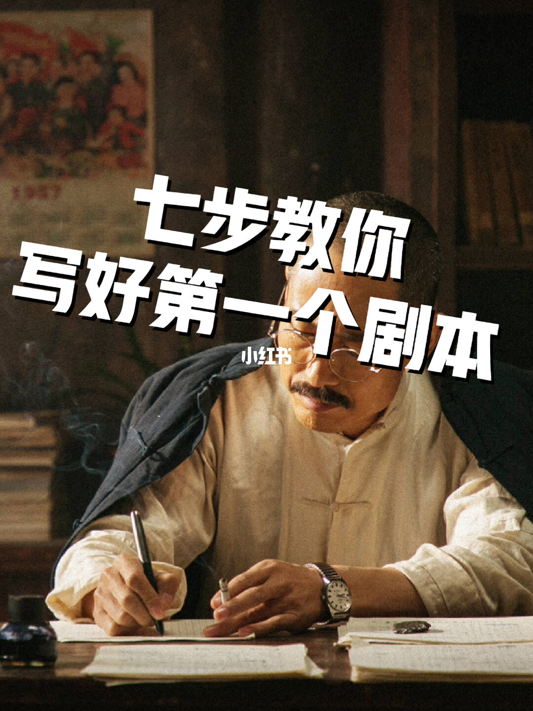
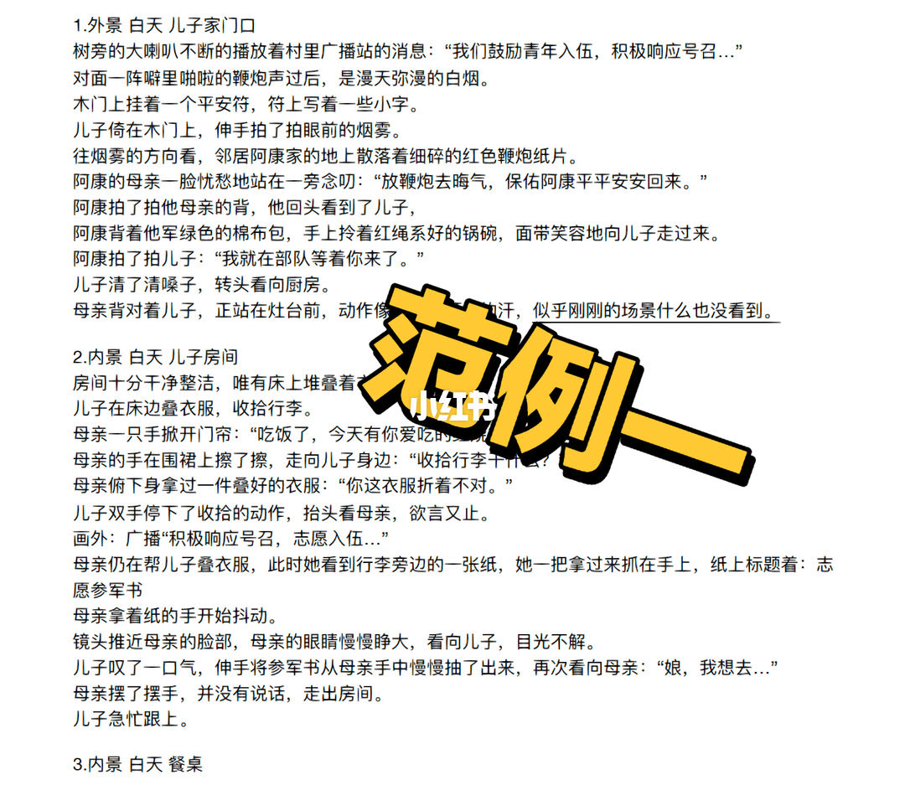
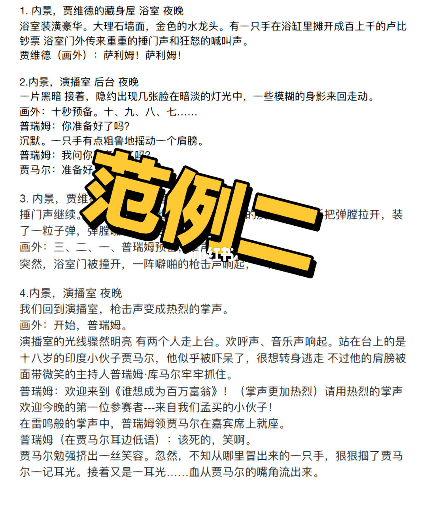
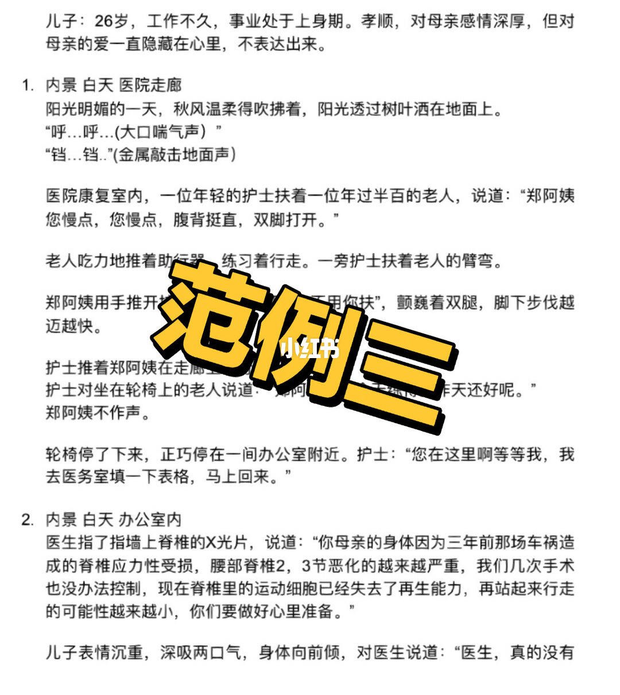

文案层：七技巧要点（摘）
01 简单化 — 常见场景 + 简单人物；独角戏也是完整故事。
02 找灵感 — 民间传说/时事/历史——关键是结构化改编，不是凭空炫技。
03 立意 — 选定情绪或世界观方向，全篇围绕核心设计。
04 开篇结局 — 开场抓眼，结局收问题或留余韵。
其余步骤见系列续篇；本篇图内示范的是「写完第一场戏」而非堆概念。
总结
新手第一稿胜利条件是完整可拍：人物简单、结构清楚、开篇有钩；范例页比口号更值得临摹。
图文实录
1. 系列入口：先写得出来
封面图内标题：七步教你写好第一个剧本——新手入门脚手架

[1/6] 封面图内标题：七步教你写好第一个剧本——新手入门脚手架
Cover title on image: seven steps to write your first script
2. 简单人物关系 + 物件点火
范例一：参军——外景广播鞭炮信息场，室内志愿书点燃母子张力

[2/6] 范例一：参军——外景广播鞭炮信息场，室内志愿书点燃母子张力
Example 1: enlistment — loudspeaker/firecrackers outside; volunteering paper sparks mother-son tension
3. 结构技巧：平行剪辑
范例二：交叉剪辑——枪响切掌声，用声音桥接两个世界

[3/6] 范例二：交叉剪辑——枪响切掌声，用声音桥接两个世界
Example 2: cross-cut — gunfire becomes applause; sound bridges two worlds
4. 立意落到角色动机
范例三：医院——人物小传先钉动机，再对切康复与坏消息

[4/6] 范例三：医院——人物小传先钉动机，再对切康复与坏消息
Example 3: hospital — pin motive with a short bio, then cross-cut rehab and bad news
5. 开篇立意一句话钉死
金句页：故事是影片成功的开端
[5/6] 金句页：故事是影片成功的开端
Line card: story is the beginning of a film's success
6. 练完第一稿再求反馈
收束互动：深入写作问题欢迎私信（film_gallery202）
[6/6] 收束互动：深入写作问题欢迎私信（film_gallery202）
Closer CTA: DM for deeper writing questions (film_gallery202)